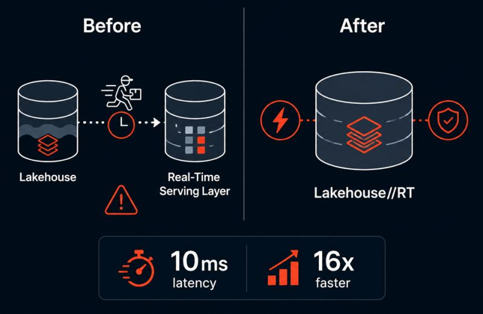

"Real-time lakehouse" always sounded like marketing speak to me. You either had fast data or governed data. Rarely both.
Then Databricks announced Lakehouse//RT, and it actually made sense.
The old problem
Needing sub-second query responses meant copying data into a separate real-time serving layer. That copy also meant more pipelines to maintain, stale data, governance gaps, and another "source of truth" slowly drifting from the real one.
Sound familiar?
What Lakehouse//RT does differently
It queries your existing Delta and Iceberg tables directly. No copies. No separate serving layer. No extra pipelines.
If LTAP was about eliminating the pipeline between transactions and analytics, Lakehouse//RT is about eliminating the pipeline between analytics and real-time serving. Two announcements, one vision.
The engine powering it is called Reyden (short for Reynold's Dream Engine), named after Databricks co-founder Reynold Xin. Databricks says it delivers response times as low as 10ms and up to 16x better performance compared to traditional real-time serving layers, all under Unity Catalog governance.

No copy, no separate serving layer — the lakehouse itself now serves real-time queries directly.
The part that actually impressed me? Zero reconfiguration. Point it at a table you already have and start querying.
If this performs as advertised, it could simplify architectures that have traditionally required separate serving databases and synchronization pipelines, removing an entire layer most data teams have just accepted as necessary.
Still in Beta but worth watching closely.